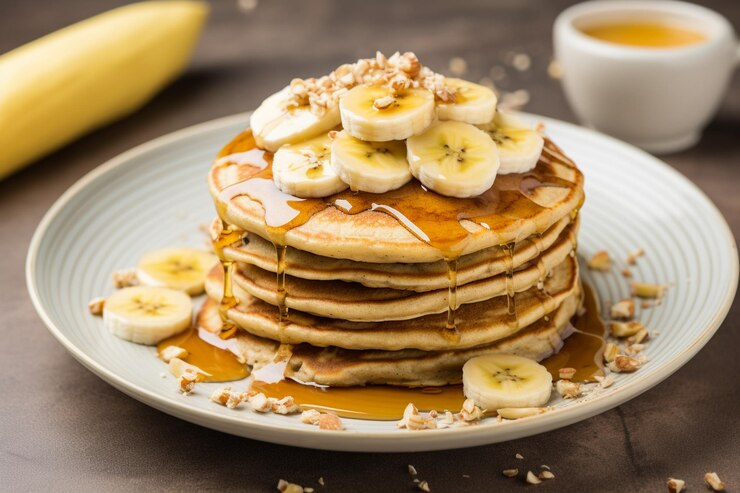

Recipe for Delicious Banana Pancakes

Description
Wake up on the right side of the bed with a stack of sweet, cozy, and simple banana pancakes.
This top-rated banana pancake recipe is easy to make and it comes together in just 15 minutes,
so you don't have to wake up early to enjoy a satisfying breakfast.
Learn how to make and serve the best proten-rich banana pancakes ever!
Ingredients
- Flour
All-purpose flour contains gluten, a protein that gives the pancakes structure
and pleasant chewiness.
- Sugar
Granulated sugar adds sweetness, helps hold in moisture, and may create a
tender texture.
- Baking Powder
Baking powder is a leavener. It creates air bubbles in the batter, which
ensures light and fluffy pancakes.
- Salt
Salt adds subtle depth to all sorts of sweet dishes, including pancakes.
You won't be able to detect it in the finished product, but you'll miss it if you leave it out.
- An Egg
Eggs work with the other ingredients to bind and provide structure. The
fatty yolks also add rich flavor and extra moisture.
- Milk
Not only does milk add flavor, it is the liquid base that's essential for
dissolving the dry ingredients and creating a cohesive batter.
- Vegetable Oil
Vegetable oil is harder to burn than butter, so it's a great fat to use in
banana pancakes. It keeps the pancakes moist and prevents them from sticking to the pan.
- Bananas
Last but certainly not least, you'll need two mashed bananas for these pancakes.
The bananas will help hold the other ingredients together and add mellow, fruity flavor.
Steps
- Mix
Combine your dry ingredients (flour, sugar, salt, baking powder) in one bowl
and your wet ingredients (egg, milk, vegetable oil, mashed bananas) in another bowl.
Add the dry ingredients to the bowl with the wet ingredients, then stir until they're incorporated.
It's OK if your batter is slightly lumpy.
- Cook
Pour the batter in ¼ cup portions onto a lightly oiled pan or griddle over medium-high
heat. Cook for a few minutes, flip with a spatula, and cook for another few
minutes (or until each side is golden brown).
- Serve
Serve your banana pancakes immediately. They're delicious alone or with your favorite
pancake toppings.